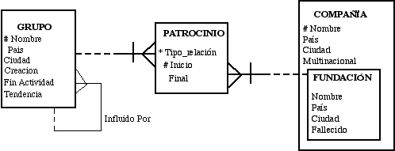

|
|
|
|
|
Esquemas de Bases de Datos |
FASE 1
Se desea mantener información acerca de todos
los espectáculos teatrales que se presentan a concurso en los festivales de
artes escénicas y toda la información relacionada con ellas.
Un festival es una convocatoria para que los grupos
presenten sus espectáculos a concurso. Se identifica con un código
y tiene un nombre (que es único), una ciudad en la que se celebra (que ha de ser introducida obligatoriamente), su país
y los días que dura.
Cada espectáculo es montado por un grupo teatral exclusivamente
que decide presentarlo a concurso en un único festival (es como su estreno).
De estos espectáculos se recoge su código (que lo identifica), nombre
(que es único), año en que fue escrito (cuatro cifras) y valoración económica
en euros necesaria para su montaje. Esta información sobre los espectáculos
incluye el dato del festival donde se presenta y el grupo que lo interpreta.
De los grupos también deseamos tener información sobre los mismos: nombre (que es único), país, ciudad, año de fundación y año de fin de actividad.
Por último, los grupos pueden pertenecer
o no a una sóla tendencia, de la que se almacena un código (que la identifica), la fecha
de su nacimiento o creación y el nombre de la misma.
Escriba el diseño entidad/relación
correspondiente a este modelo y cree el esquema relacional correspondiente.
FASE 2
El modelo que hemos obtenido es el siguiente:

No obstante en su esquema aparece una versión anterior del esquema que no se corresponde exactamente con lo especificado en el diagrama E/R. Realice las modificaciones al modelo relacional que está
ya creado en su esquema para que se corresponda con el diseño especificado en el modelo entidad/relación.
Las tablas disponen de algunas filas ya insertadas,
por lo que si alguna de ellas le causa problemas con las restricciones que
cree, deberá cambiar sus valores para que cumplan las condiciones establecidas.
Si los valores se han de mover de tabla, realice operaciones con INSERT o UPDATE
para conservar dichos valores.Bajo ningún concepto se puede borrar una tabla
del modelo para volver a crearla.
Además tenga en cuenta las siguientes restricciones:
|
|
|